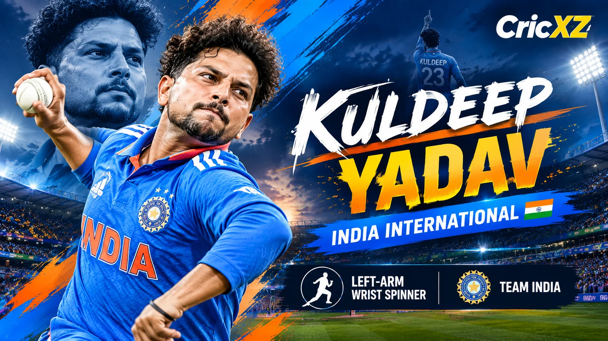

Test
- Matches
- 19
- Bowling innings
- 36
- Wickets
- 80
- Bowling average
- 23.36
- Economy
- 3.56
- BBI
- 5/40
- Five-wicket innings
- 5

Kuldeep Yadav is a rare left-arm wrist spinner who has bamboozled batters worldwide. Known for his deceptive wrong'un, he has claimed over 370 international wickets and holds the distinction of taking two hat-tricks in ODIs for India.
Career statistics updated: 2 October 2026
Primary statistics source: BCCI / ICC
As of October 2026, Kuldeep Yadav remains a vital strike weapon for India, particularly in white-ball cricket. He boasts 200 ODI wickets in 123 matches at an average of 26.00 and an economy of 5.00. In the shortest format, his T20I record is phenomenal, with 95 wickets at a dazzling average of 13.00 and an economy of 6.00.
His capacity to extract sharp turn and drift makes him highly effective in middle overs, regularly breaking crucial partnerships. His recent standout performances include a stellar showing at the 2025 Asia Cup, where he claimed 17 wickets in 7 matches at an average of 9.29, earning the Player of the Tournament award. He was also a member of the World Cup-winning Indian squad in 2024.
In Test cricket, he has taken 80 wickets in 19 matches, featuring 4 five-wicket hauls, proving his adaptability across all formats.
25 March 2017
Against Australia at HPCA Stadium, Dharamsala.
23 June 2017
Against West Indies at Queen's Park Oval, Port of Spain.
9 July 2017
Against West Indies at Sabina Park, Kingston.
Became the first Indian bowler to secure two hat-tricks in international cricket after taking a hat-trick against West Indies.
Dominated the 2025 Asia Cup with 17 wickets at an average of 9.29, taking home the MVP award.
Played a critical role in the bowling attack that helped India lift the 2024 ICC Men's T20 World Cup.
Career statistics updated: 2 October 2026. Test, ODI and T20I aggregate figures use the BCCI and ICC career-statistics baseline.